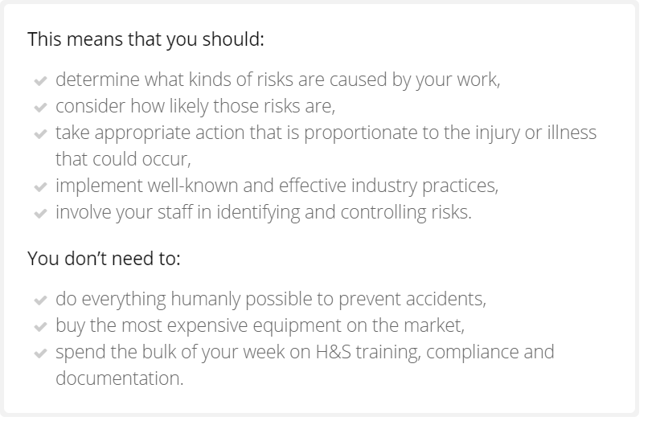
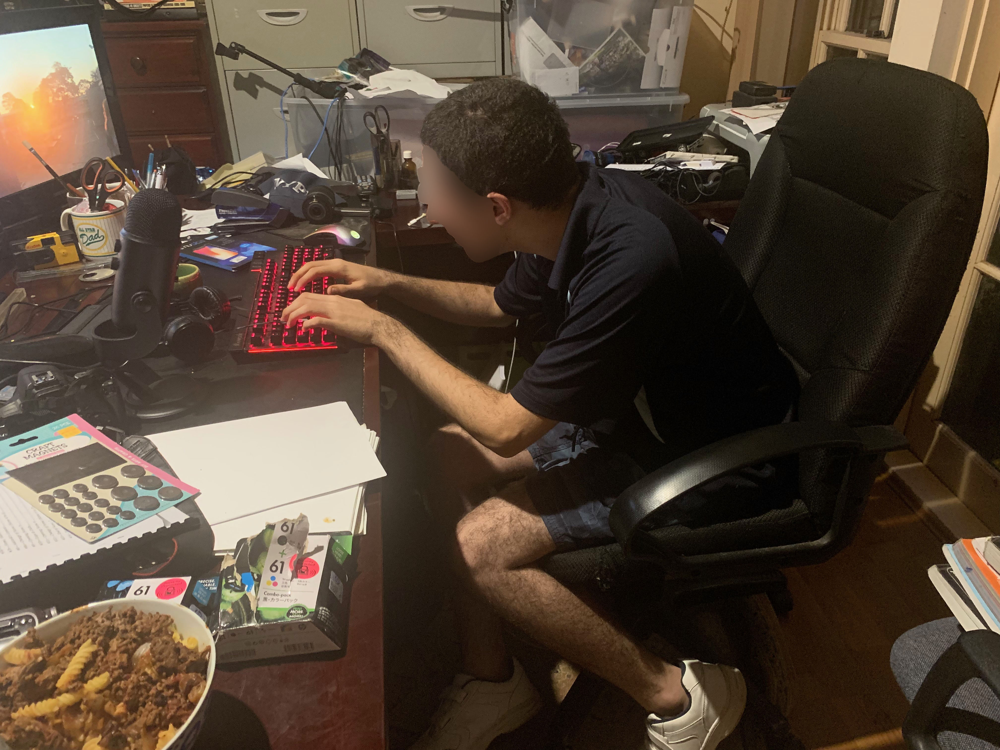

Be CO2 Smart - Understanding Climate Change
Student Number: 31244536
THE NEED for WHS when making a film
Before undertaking my project, it would be highly important that I identified all possible risks that could occur during film making especially in the staging and production phase.
After identifying and assessing the potential safety risks, I would create a document “Risk Assessment Matrix”, that set forth all safety risks and strategies to prevent or at least minimise risk occurrence.
This matrix would be printed and routinely referred to, especially during the production process. Copies would be created and distributed to people involved on set during production.
Any person involved in this project, would always need to know and understand the safe and cooperative work practices and work environment.
LEGISLATION – WHS ACT
I firstly referred to the WHS ACT, the Australian Legislation, TO ENSURE A SAFE WORKING ENVIRONMENT The NSW Work Health and Safety Act 2011 (WHS Act) and the NSW Work Health and Safety Regulation 2017 (WHS Regulation) define the obligations both employers and workers have to health and safety in the workplace. The WHS legislation is supported by Safe Work Compliance policy and prosecution guidelines, which supplements the National compliance and enforcement policy. If employing any person for this project I would also need to understand how businesses have to comply with the workers compensation requirements.
There is prepared information on how to identify hazards and manage the risks common to the information media and telecommunications industry, such as:
- induction, instruction procedures
- elevated work platforms
- equipment safety
- heights
- electricity
- transport
- traffic
- Stunt work in film, television and video production is a significant hazard which must be managed
Other common hazards include:
- fatigue
- lifting heavy objects causing hernia or back disk displacement
- alcohol and other drugs
- hot and cold work environments
- sedentary work
Safe Work NSW hazard library has information on how to manage hazards and risks. As the work health and safety regulator in NSW, Safe Work NSW has a wide range of technical, business, management and support services to help film making safe.
| FILM NAME | Be CO2 Smart |
|---|---|
| PRODUCER | Student Number: 31244536 |
| RISK ASSESSMENT CONDUCTED BY | Student Number: 31244536 |
| RISK ASSESSMENT DATE | 17th January 2019 |
| RISK/HAZARD | PEOPLE INVOLVED | ASSET INVOLVED | RISK CONTROL IMPLEMENTED | RISK RATING (Low/ medium/ high) |
FURTHER RISK CONTROL NEEDED |
|---|---|---|---|---|---|
| Wires as tripping hazards (green screen and electrical wires | camera | Sticky tape over the wires to minimise risk | Medium | Warning Sign | |
| Drone take-off and landing | Actors Technical staff public |
Drone | Impose a distance to respect from operational drone | High | Advise council of operations at beach |
| Filming horses | riders | camera | Impose a distance between camera and riders | High | Respect distance and quiet approach (no lights) |
| Electrocution hazard | Actors/technical crew | Computers or screens or lighting equipment | Tapes over wires | Medium | put away at higher level taped to wall |
| Ergonomics-RSI/eye strain | Editors | Computers, layout of desk setup/monitor | Proper posture, suitable viewing angle, regular breaks | Medium | Education of risks for editors, inspection of workspace |
| Car Related incident while filming | Myself and my family driving, pedestrians. | Filming equipment | Driving at appropriate speed limit. | Low | Wear seatbelts and follow road rules. |
| Sun Exposure | Filmer or an actor | Umbrellas, and long sleeve clothing and sunscreen. | Ensuring that sunscreen is reapplied often and wearing appropriate clothing | Low | Wide brim hats or wear a cap. |
SAFETY MEASURES to conform to: General Set, Workplace and Warning Signs Guidelines
- Base tripods to be used well tightened to stabilise lighting equipment
- Wires and chords to be stowed where appropriate
- Wires and chords to be taped to the floor or wall to avoid tripping. Use Gaffer tape.
- Monitor bright lights positioning and strain on actors.
- Monitor position and temperature of lighting equipment when too close to flammable items.
- Appropriate fire extinguishing equipment to be readily available as per WHS Guidelines.
- Monitor positioning and use of boom pole
- Signage for all many tripping hazards on set such as wires, cables, tripods.
- Take breaks between shots
- Inform new actors of toilet facilities and exits
- Paste on wall WHS main guidelines in filming and editing studio
- Drone legislation understood and followed
Checklist to keep handy:
Personal Guidelines:
- Ergonomic chair
- Ergonomic desk
- Multiple breaks
- Good lighting
- Air-conditioned room to avoid heat or cold.
Risk Assessment Evaluation
Evaluation: I have demonstrated that the production of a Multimedia project includes more than the WHS requirements of the video and editing production. I have demonstrated industry practice through the use of a risk matrix, I have linked to the development of the set used in the imagery for the short film production.
WHS Images
It was found that my posture was not appropriate and making me subject to fatigue and back pain, a simple correction of my sitting position.
It was found that correct ergonomics and handling of the mouse had to put in place.


It was found that the correct adjustment of the chair height enabled a better position of the legs and the feet.


WHS EVALUATION - JUDGEMENTS
I am satisfied with the rigorous approach I adopted towards WHS practices because it was very useful and these are the key changes I made as I evaluated my working environment:
My Risk Assessment Evaluation/Judgement
Evaluation/Judgement of Risk Assessment Matrix:
I was satisfied with how I listed all hazards and risks, and evaluated the importance of each and I analysed the requirement for Safe Working Practice Documentation. I realised that before undertaking my project, it would be highly important that I identified all possible risks that could occur during film making especially in the staging and production phase. After identifying and assessing the potential safety risks, I created a document “Risk Assessment Matrix”, that set forth all safety risks and strategies to prevent or at least minimise risk occurrence. This matrix was printed and referred to, during the production process. Copies were created and distributed to everyone involved on set during production to be aware and understand the safe and cooperative work practices of the work environment.
Evaluation/Judgement of the Legislation – WHS ACT as applicable to this project:
I was happy that I took the time and referred to the WHS ACT, the Australian Legislation, to ensure a safe working environment. The NSW Work Health and Safety Act 2011 (WHS Act) and the NSW Work Health and Safety Regulation 2017 (WHS Regulation) define the obligations both employers and workers have to health and safety in the workplace. The WHS legislation is supported by Safe Work Compliance policy and prosecution guidelines, which supplements the National compliance and enforcement policy. I understood that if employing any person for this project I would also need to understand how businesses have to comply with the workers compensation requirements. I discovered that there is prepared information to support the legislation on how to identify hazards and manage the risks common to the information media and telecommunications industry, such as:
- induction, instruction procedures
- elevated work platforms
- equipment safety
- heights
- electricity
- transport
- traffic
- stunt work in film, television and video production is a significant hazard which must be managed.
I had to make sure I followed all these common guidelines in order to make sure people were safe from all types of hazards such as trip hazards, wiring etc.
Evaluation/Judgement on ergonomics and my personal fatigue and comfort as the producer:
I understood that general fatigue and tiredness from long hours of work as well as lifting heavy objects can cause hernia or back disk displacement and that these are potential work risks. I learnt that high temperatures in work environments can cause dizziness and that long periods of sedentary work are not good either and that regular stretch breaks are good for productivity and healthy work practice. I also learnt that the work health and safety regulator in NSW, Safe Work NSW has a wide range of technical, business, management and support services I could call on to help filmmaking safe.
I have demonstrated that the production of a Multimedia project includes more than the WHS requirements of the video and editing production. I have demonstrated industry practice through the use of a risk matrix, I have linked to the development of the set and its various equipment tools used for the short film production.
My working environment Evaluation/Judgement
I have analysed the ergonomics of my environment and I'm satisfied that I have corrected lighting, chairs and tables as well as storage of my work sources and tools.
Other WHS issues/Judgement
As additional WHS issues were encountered I added them in to the risk assessment matrix therefore I am satisfied that I have included all items.